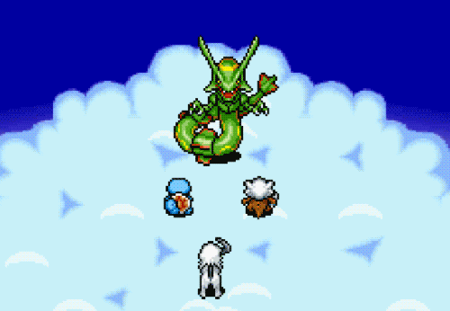
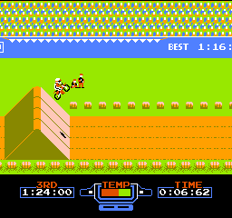
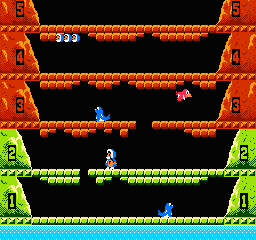
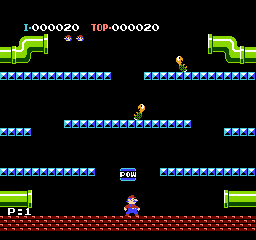
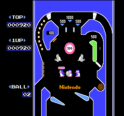
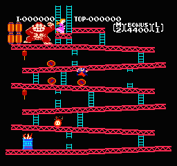

Excitebike
Carreras de motos contra el crono, rivales y obstáculos. Para hacer podio, hay cuidar la temperatura del motor y los saltos. Dificultad por las nubes.

Ice Climber
Popo y Nala tienen que destrozar 32 techos helados a base de martillazos, y al mismo tiempo acabar con osos polares, aves y focas. Tan divertido como suena.

Mario Bros
Mario estrena nombre, hermano y juego propio en Famicom. Es calcado al arcade, y se versionó para otras 8 máquinas diferentes.

Pinball
Divertido simulador de pinball, que incluye una fase de bonus con toque Arkanoid, en la que Mario tiene que salvar a la adorada Pauline.

Donkey Kong
Conversión perfecta del mítico arcade en el que nacieron Donkey, Mario (Jumpman) y Peach (Pauline). Divertidísimo.

Asphalt 9: Legends
Otro de los juegos mejores juegos para Android más destacados de 2019 es Asphalt 9: Legends. La undécima entrega de la saga Asphalt desarrollada por Gameloft sigue las mismas premisas de todo buen juego de conducción (gráficos increíbles, gran variedad de vehículos, etc).
Clash of Clans
Uno de los mejores juegos Android que podéis encontrar en la Play Store es Clash of Clans, un videojuego free-to-play desarrollado por Supercell. En este juego de estrategia, algunos de nuestros objetivos son tener que construir nuestra propia aldea, entrenar tropas y realizar hechizos para atacar a otros jugadores en línea. También se pueden crear clanes entre diferentes usuarios para colaborar entre ellos.
Clash Royale
Del éxito de Clash of Clans surgió otro videojuego basado en su universo: Clash Royale. Se trata de un juego Android de estrategia que ha logrado conquistar a grandes y pequeños hasta batir récords de descargas.
Far Cry 5
Un "shooter" en primera persona, ambientado en la América profunda en que nos enfrentamos a una secta -sólos o en modo cooperativo- por la fuerza de las armas.
Yakuza 6
Es la aventura más ambiciosa protagonizada por Kiryu Kazuma. Un juego lleno de investigación y combates para descubrir todos los secretos de la mafia japonesa.
Monster Hunter World
Un nuevo continente lleno de criaturas monstruosas que podíamos cazar en solitario o en el modo online. La variedad de armas, las trampas y el entorno le daban una increíble profundidad.
Half-Life 2
Tras convertirse el primero en el catalogado como “mejor juego de PC de la historia”, ‘Half-Life 2’ tenía la difícil tarea de mantener el listón igual de alto. Este puesto en la lista demuestra hasta qué punto lo consiguió, convirtiéndose en uno de los títulos que marcaría el camino a seguir por la industria en los años siguientes en lo que se refiere a gráficos, físicas, inteligencia artificial y, por encima de todo, narrativa.
Grand Theft Auto V
Convirtiéndose en el segundo juego que más copias físicas ha conseguido vender, sólo por detrás de un fenómeno como ‘Wii Sports’ (y sin tener en cuenta que sumando las digitales la cifra puede verse ampliamente superada), ‘GTA V’ se ha convertido en un fenómeno de masas que después de cinco años aún sigue copando las listas de ventas. No está ahí por suerte, claro, es uno de los mundos abiertos más atractivos y divertidos que jamás se ha creado.
BioShock
Historia, gráficos, jugabilidad… ‘BioShock’ tiene todo lo que le podrías pedir a un FPS, pero además se las apañó para llevar un paso más allá el cómo se contaban las historias dentro de una aventura de acción. Un viaje a las profundidades para descubrir una ciudad submarina en la que una utopía se ha convertido en un absoluto infierno que ha escapado al control de sus creadores.